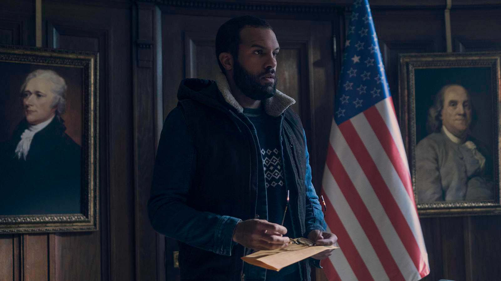

For those who are unaware, The Handmaid’s Tale is set in a world very similar to ours, perhaps even in our near future, in which some sort of anthropogenic, environmental problem leads to a human fertility crisis.
With no solution to humanity's plummeting growth rate, turmoil ensues with perhaps the worst occurring in the United States of America. A fanatical religious group, the Sons of Jacob, justify that modernism and
libertarianism are the causes of the crisis; a shift in ideals to free-choice individualism away from the importance of childbearing will destroy humanity. They gain popularity from a malcontent society.
The Sons of Jacob secretly orchestrate a terrorist attack, which succeeds in killing the vast majority of the U.S. Congress and the Cabinet, including the President. The resulting skeleton government is furtively
controlled by the Sons of Jacob and the attack is used as a scapegoat to impose martial law and slowly restrict the rights of the people (for those interested in history, this is very similar to the
1933 Reichstag fire).
Women are removed from employment; their bank cards are cancelled. Protests are quashed by lethal force. The end state is a total takeover of the U.S. government by the Sons of Jacob who create a new nation state – the
Republic of Gilead. This is a country that implements a fundamentalist, theocratic government, imposing a horribly inhumane sociopolitical system to revitalise the dwindling population. I won’t go into detail here (that’s
what the show is for) but the point is that Gilead was born from modern-day America.
The idea of rival forces within the U.S. is not an unfamiliar concept. In a country where laws on acquiring firearms are relatively lax, groups can easily form a threatening militia to rival the government. Combining this
with religious extremism can lead to violent domestic situations such as the
1992 Waco Siege (from which Kevin Smith’s 2011 film
Red State is loosely based off; worth a watch if you enjoy morbid humour), when government
authorities attempted to search the compound of the Branch Davidians, an apocalyptic Christian cult, for stockpiled weapons. The forewarned Davidians resisted, resulting in a 51-day siege and the deaths of 86 people, including
28 children. Of course, such extremism is not popular enough to constitute a nationwide threat but this can change quickly in times of crisis.
The Handmaid’s Tale explores the idea that the destroyer of freedom is always
lurking just around the corner, ready to pounce when bread becomes scarce.
Of course, the U.S. is certainly not unprepared for such situations. I don’t mean its government, which is always combating such domestic terrorist groups with an arsenal of administrative departments, but rather its culture and people.
The Second Amendment to the United States Constitution was ratified in 1791 with the intention of giving the American people the right to bear arms as it was
“necessary to the security of a free State”. In other words, while interpretation
varies, a primary reason for the Second Amendment was to place the right to defend the free state in the hands of the people. In the event of a tyrannical government being formed, the people themselves would be able to fight back.
The Second Amendment is nonetheless a double-edged sword; the same right that allows the people to contest a tyrannical government could also be used by tyranny to seize power. Yet ironically, if such tyranny were successful in doing so,
they would inevitably have to contend with the American population. Such a vicious cycle makes America a highly volatile place in times of crisis, both for the would-be oppressors and the resisters, the definitions of which becoming quickly
murky in any violent insurrection. In The Handmaid's Tale, such volatility is indeed a problem for Gilead. While the show generally portrays Gilead having absolute power over the former U.S., it is in actuality quite the opposite. Gilead is
only successful in taking over the political nerve centre of the north-east, specifically around Washington D.C., which gives them the justification they need to claim sovereignty. Yet, the majority of contiguous America is outside of
Gilead's control, being either controlled by rebels, under conflict or in inhospitable conditions.
The map below demonstrates this well. One can see Gilead’s true control is only in the north-east (blue) and makes up about 20% of America’s total area. Rebels control a significant proportion of the country on the international borders (red).
The zones of dispute (pink) are even larger. It is clear from the little territory Gilead actually has that, for all intents and purposes, this is really an ongoing (second) civil war for America. While Gilead claims to be the new sovereign
state, the rest of the world sees this scenario as a domestic dispute, similar to how we may view other geopolitical dilemmas such as the Israeli-Palestinian conflict; they are ongoing issues we are very aware of and we are reluctant to be
directly involved with them.
An interesting addition to this world are the so-called Colonies (yellow). The show depicts them as inhospitable, dangerous terrains technically under Gilead jurisdiction (probably because no one else has any use for them), to which the “Unwomen”
and other heretics of Gilead are exiled. It is not explained
how they came to be but perhaps these arid, inland areas of America had already become barren due to the global environmental crisis. As for the origin of the nuclear wastelands (green), a clue may be found in the
current locations of U.S. nuclear power plants. Funnily enough, most of these wastelands coincide with the location of major power plants. What's more, none of the wastelands are in the east, despite that area of America having the highest
density of them. This also happens to be where Gilead has most control. These two points may indicate that Gilead destroyed several large western power plants to curb an impending revolution. Given how large the U.S.
is and the significant power each of its states wield, it would be easy for the country to be fractured between opposing, seceding governments in the event of civil war. This was indeed the case during the original American Civil War which precipitated
due to the withdrawal of several southern states, beginning with South Carolina, from the federal U.S. Perhaps Gilead destroyed such a threat by weaponising nuclear power plants.
Yet on no account are the enemies of Gilead totally quelled. Aside from the rebels controlling a portion of the country, there is also the existence of the U.S. Government-in-Exile, one of my favourite particulars of the show. In the final days of
Gilead’s takeover, the American government fled and transferred its capital city to Anchorage, Alaska, whose population exploded due to fleeing Americans. It is implied that, while severely weakened, the American government still has significant wealth
and exercises non-trivial power on the world (even possessing some military might, as seen in the latest season), opening up embassies in Canada and presumably supporting the rebel force. After all, Alaska and Hawaii, being
America's two non-contiguous states well outside the reach of Gilead, both totally remain in U.S. control. With a combined GDP of approximately $125 billion in 2022, the economies of these two states alone are enough to rival smaller countries
(
the closest being Slovakia coming in at $133 billion). A small detail I love is the Government-in-Exile's flag transiently shown throughout the show. It has only two
of its fifty stars coloured in, the rest only outlined, signifying the believed temporary loss of the 48 U.S. states. There is a great exploration of this American tragedy especially through Mark Tuello, an ambassador of the Government-in-Exile to Canada.
His stolid yet recalcitrant attitude toward members of Gilead is strangely admirable and almost makes me feel patriotic, even though I am not so, nor am I American.
Delving into these thoughts makes me wonder about the impact the rise of Gilead would have had on the rest of the world. The U.S. is globally the most powerful country in many regards: militarily, economically and politically. One does not need a degree
in economics to know that the loss of America, which makes up one quarter of the world’s economy, would have had a grave impact on the world. Yet, given the gradual takeover of Gilead, the world may have had some time to adapt to the impending
situation. Perhaps in anticipation, the world banks and currencies agreed to move the reserve currency to the next most powerful currency: the euro. Or perhaps a complex power play between countries occurs, allowing China’s currency, the renminbi,
to take a dominant position. While in our world, the current global power rivalry is between the U.S. and China, in this world, it may have switched to being between Europe and China. Europe would again become the political and economic centre of the world with
countries such as Germany, the U.K. and France calling the big shots. And perhaps Australia drifts from its connection to the West as China’s geopolitical control in Asia becomes virtually uncontested. Of course, this is only one
angle; I have so many other questions regarding the rise of Gilead. What happened to America's nuclear armaments? Do big tech companies like Google and Apple survive? If not, what happens to major internet services like search engines and YouTube?

One of my favourite details from The Handmaid's Tale — the two-starred American flag, here naturally accompanied by a portrait of Benjamin Franklin to further emphasise this curious, grimdark, American tragedy.
The latest season of The Handmaid's Tale has more geopolitics than ever before, exploring in detail the rising tensions in Toronto between the local Canadians and the refugee Americans, whose numbers are reaching all-time highs. The Commanders of
Gilead, who begin to realise that their iron curtain policies are only detrimental, offer to alleviate this by creating a safe haven within Gilead for refugee Americans. Even the rest of the world seems to have become more accepting of Gilead, perhaps
now realising that they're here to stay, as it has been five years since their takeover. I'm excited to see how these geopolitics will develop over the upcoming seasons. Given the series will be entering its sixth, perhaps the writers will start
gearing toward an ending. Perhaps the global crisis will be rectified and Gilead will be slowly replaced by a democratic system. Or it could be that a war will see the defeat of Gilead and the arrest and trial of the Commanders for their crimes. Or
maybe we won't be satisfied at all and our characters and their world will live on with Gilead's continued autonomy. In this case, time moves on and Gilead just becomes another human society whose cruel origins and motivations become lost to history.
By no means am I an expert in geopolitics. These thoughts above are all pure speculation from my own understanding of the world. I love alternate history exploring hypothetical worlds that somehow deviate from our own (some other shows like this
I’ve enjoyed include The Man in the High Castle and For All Mankind). The speculation and hypothesising is alluring, but stories like these can also explore aspects of our own world. In the case of The Handmaid’s Tale, we see how under certain
circumstances, the world could revert to a mediaeval barbarism. We often forget that modern, "civilised" society has really only been around for a minute fraction of our total history. We are still those same violent and conquering species
that has existed for millennia and the creature-comfort, lenient society of today is simply a veneer which can be stripped away when we bare our teeth in desperate times. Yet, the focus in The Handmaid's Tale on the traumatic impact cruelty
creates, even for the oppressors, perhaps indicates that humans are only ever cruel out of desperation. We have finally achieved creating a relatively peaceful and privileged global society, in which we can afford to show sympathy and mercy. And even though
we look back on the people of history as being barbaric, they would also have been equally capable as us at showing the same sympathy and mercy to other fellow humans. From time to time, we may be creatures of brutality, but in the end it is humanity that
prevails. ※